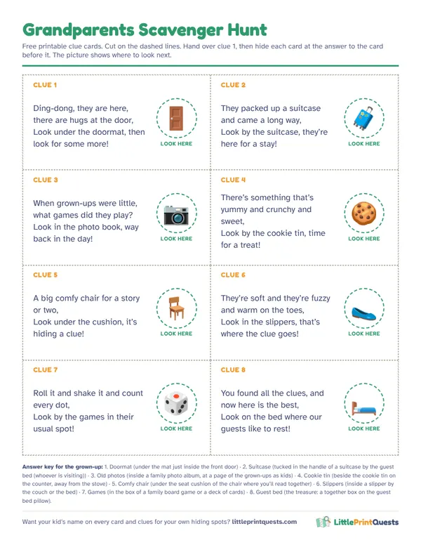

Scavenger hunt for grandparents and grandkids
The bags are in, the hugs are done, and now everyone is standing in the kitchen wondering what to do. This hunt gives a grandparents’ visit its first adventure: eight clues through the suitcase, the old photos, the cookie tin and the comfy chair, ending in a box of things to do together.
Make a personalized hunt for the grandkids8 free rhyming clues
Hide each clue at the answer to the clue before it, while the grandkids settle in. A grandparent reads each rhyme out loud, and the trail ends on the guest bed.
Clue 1
Ding-dong, they are here, there are hugs at the door,
Answer: Doormat. Hide it: Under the mat just inside the front door.
Look under the doormat, then look for some more!Clue 2
They packed up a suitcase and came a long way,
Answer: Suitcase. Hide it: Tucked in the handle of a suitcase by the guest bed (whoever is visiting).
Look by the suitcase, they’re here for a stay!Clue 3
When grown-ups were little, what games did they play?
Answer: Old photos. Hide it: Inside a family photo album, at a page of the grown-ups as kids.
Look in the photo book, way back in the day!Clue 4
There’s something that’s yummy and crunchy and sweet,
Answer: Cookie tin. Hide it: Beside the cookie tin on the counter, away from the stove.
Look by the cookie tin, time for a treat!Clue 5
A big comfy chair for a story or two,
Answer: Comfy chair. Hide it: Under the seat cushion of the chair where you’ll read together.
Look under the cushion, it’s hiding a clue!Clue 6
They’re soft and they’re fuzzy and warm on the toes,
Answer: Slippers. Hide it: Inside a slipper by the couch or the bed.
Look in the slippers, that’s where the clue goes!Clue 7
Roll it and shake it and count every dot,
Answer: Games. Hide it: In the box of a family board game or a deck of cards.
Look by the games in their usual spot!Clue 8
You found all the clues, and now here is the best,
Answer: Guest bed. Hide it: The treasure: a together box on the guest bed pillow.
Look on the bed where our guests like to rest!
Free printable clue cards
All 8 clues on one sheet with picture hints for pre-readers, dashed cut lines and an answer key for the grown-up doing the hiding. Print it, cut it, hide it.

Download the free printable (PDF)
A hunt grandparents can run
This trail works in any house, so it fits both kinds of visit: grandparents coming to stay with you, or the grandkids arriving at theirs. The clues are things every home has, plus a few that belong to a visit, like the suitcase and the guest bed.
- Let the grandparents lead. They read the rhymes, the kids do the finding. It breaks the ice for little ones who are shy for the first hour.
- Hide the cards while everyone unpacks. A parent can set the trail in five minutes while the grandparents get the welcome hugs.
- Use your family’s names. Read “Nana”, “Pop-Pop” or “Abuela” wherever it fits. On a personalized hunt, the kid’s name is printed on every page.
- Visiting from far away? Grandparents can run it over a video call: a parent hides the cards, the grandparent reads each rhyme on screen.
Turn each stop into a story
The best part of a grandparents’ visit is the stories, and every stop on this trail has one waiting. At each card, the kid asks one question and a grandparent answers:
- Suitcase: What was the farthest trip you ever took?
- Old photos: What did my mom or dad get in trouble for?
- Cookie tin: What was your favorite treat when you were little?
- Comfy chair: What was your favorite book or bedtime story?
- Games: What games did you play outside with your friends?
Big kids can write the answers down. Little ones can draw a picture of the story, and a grown-up writes a line under it to keep.
What to put in the together box
The treasure is a box of things to do with the grandparents for the rest of the visit. Any shoebox works:
- A deck of cards for Go Fish, Crazy Eights or a first game of rummy.
- A cookie recipe card and cookie cutters for baking together.
- A picture book for the comfy chair, or a blank one to make up a story together.
- A jigsaw puzzle to leave out on a table all week.
- Stamped postcards addressed to the grandparents, to mail after they go home.
Grandparents’ houses aren’t always set up for small kids: before you hide the cards, move pills and purses up high, and keep clues off stairs, away from the stove and anything hot.
More to do together
A day with the grandparents is made for slow play. Bake together in a pretend Chef’s Kitchen, open a living room library for story time, or set up a coffee shop where the grandkids serve the grown-ups. Our printed hunts have your kid’s name on every page and arrive by email in minutes.
- Chef’s Kitchen pretend play
- Library pretend play
- Coffee Shop pretend play
- Indoor hunt for a house
- Christmas Eve scavenger hunt
Make a personalized hunt for the grandkids
Questions
What can grandparents do with grandkids on a visit?
Start with a scavenger hunt that ends in a box of things to do together, then settle in with card games, baking, a jigsaw puzzle and story time. Asking grandparents about their childhood at each stop turns the hunt into family stories.
Can grandparents do a scavenger hunt over a video call?
Yes. A parent hides the cards around the house, the grandparent reads each rhyme on the call, and the kids run back to the screen with every card they find.
Can a 3 year old do a grandparents scavenger hunt?
Yes. A grandparent reads the rhymes out loud, and the free printable has a picture of the hiding spot on every card so little ones can find it themselves.
More hunt ideas
- Birthday party hunt
- Ages 3 to 5
- Ages 6 to 8
- Thanksgiving hunt
- Classroom hunt
- Christmas Eve hunt
- New Year’s Eve hunt
- Snow day hunt
- Apartment Scavenger Hunt
- Indoor Scavenger Hunt for a House
- Backyard Scavenger Hunt
- Dinosaur hunt
- Superhero hunt
- Pirate hunt
- Outer Space hunt
- Princess & Knights hunt
- Unicorn hunt
- Mermaid hunt
- Construction hunt
- Pet Vet hunt
- Easter hunt
- Halloween hunt
- Christmas hunt
- Valentine’s hunt
- Firefighter hunt
- Ice Kingdom hunt
- Race Car hunt
- Pizza Shop hunt
- Burger Shop hunt
- Grocery Store hunt
- Post Office hunt
- Library hunt
- Police Station hunt
- Dentist hunt
- Pet Shop hunt
- Coffee Shop hunt
- Italian Restaurant hunt
- Auto Shop hunt
- Play Kitchen hunt
- Doctor hunt
- Puppet Theater hunt
- Secret Agent hunt
- Dress-Up hunt
- Ice Cream hunt
- Airport hunt